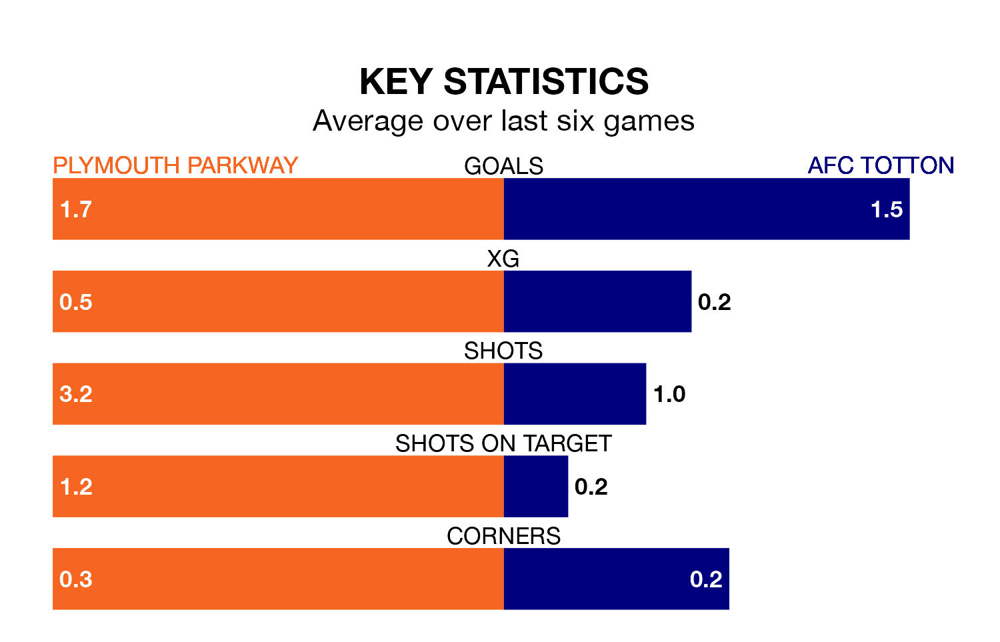

AFC Totton face Plymouth Parkway on Wednesday seeking to protect their long unbeaten run in the Southern League Premier South.
Totton are unbeaten in five, with two wins and three draws, ahead of the 7.45pm kick-off.
They face a Plymouth Parkway team who have won two and drawn two over the same number of games.
With 55 goals in 27 games so far this season, Totton are scoring more than average in the league with 2.0 goals per game. And they are conceding fewer than average, letting in 35 goals at a rate of 1.3 per game.
Plymouth Parkway, meanwhile, are average scorers, with 1.7 goals per game. They have conceded 1.4 goals per game.
The away team are fifth in the table after 27 games, of which they have won 12 and drawn 10, earning 46 points.
The hosts are 12 places behind Totton in 17th, with eight wins and seven draws putting them on 31 points.
In the last three years, Plymouth Parkway and Totton have played each other on three occasions. Plymouth Parkway won one of them and Totton the other.
Their last meeting was on October 7, when Totton won 2-1 at home.
Plymouth Parkway's last match was on January 30, a 1-0 loss against Beaconsfield Town.
Totton drew 2-2 with Swindon Supermarine last time out, on February 3.
Updated: 13:30 (UTC), 12/02/24